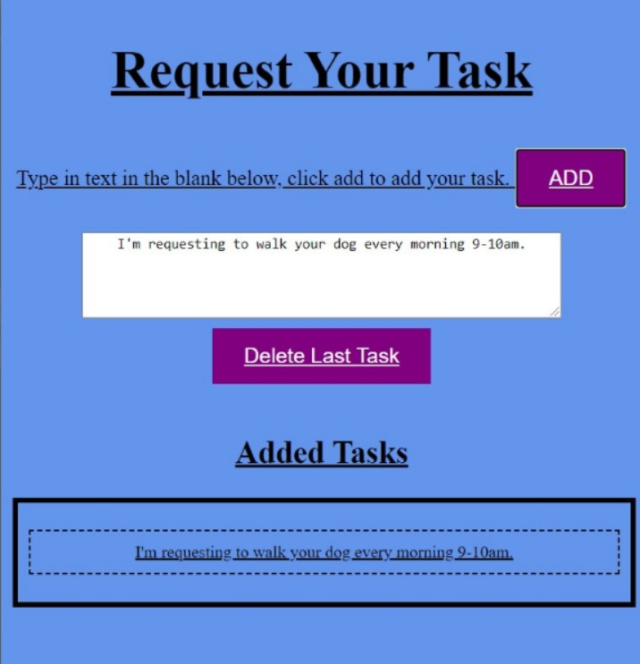

A web-based application
It is an online platform that provides individuals with the opportunity to voluntarily help the elderly, someone who is physically or emotionally unwell or has been injured gain mobility in this pandemic by requesting or lending a hand.
A hackathon, Winhacks2020, sponsored by the University of Windsor, has allowed me to collaborate with a front-end development team in developing the welcome page and task-list for the app.
To give the application a flexible structure, I designed a responsive homepage and a task list that connects volunteers to their requesters, allowing users to add and delete tasks from the listing tab.